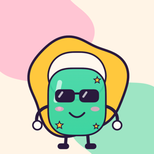

Nell: Stop Biting Nails
Help and contact
Nell is a fingernail who lost everything to your teeth. Log every bite and every urge you beat, snap your nails once a day, and watch her grow back: from a raw, fly-covered horror to a diamond-tipped legend with a crown and a cape. Funny, never preachy.
Questions
- How do I log a bite or an urge?
- Tap "I bit" or "Urge, resisted" in the app. You can also add Nell's widget to your home screen, add her buttons to Control Center or the Action button, or ask Siri. With Shortcuts you can even log with a double tap on the back of your phone (Settings > Accessibility > Touch > Back Tap). The app shows how in Settings > Log from anywhere.
- Why does a bite hurt so much?
- On purpose. A bite costs points, more as Nell climbs, and she can lose levels. Then you say why you bit: noticing what sets you off is half the battle. Tapped by mistake? "I tapped by mistake" takes it back, and the undo button on Today removes your last entry of the day.
- Why one bite and one urge a minute?
- So a double tap doesn't count twice. The buttons show when they're ready again.
- How does the daily photo work?
- Put your hand in the outline: Nell spots it, counts down from 3 and takes the photo. Yesterday's photo shows faintly so every day lines up. You can crop any photo later; the original is kept. Compare two days with the slider, or play them all in the flipbook.
- What counts as a clean day?
- A day with a nail photo and no bite. Clean days in a row make your streak.
- Where is my data?
- On your phone, nowhere else. No account, no server. See the privacy policy.
- How do I start over?
- Settings > Start over erases everything and gives you a fresh, horrifying Nell.
Contact
A bug, an idea, a nail success story: loulou4@live.ca